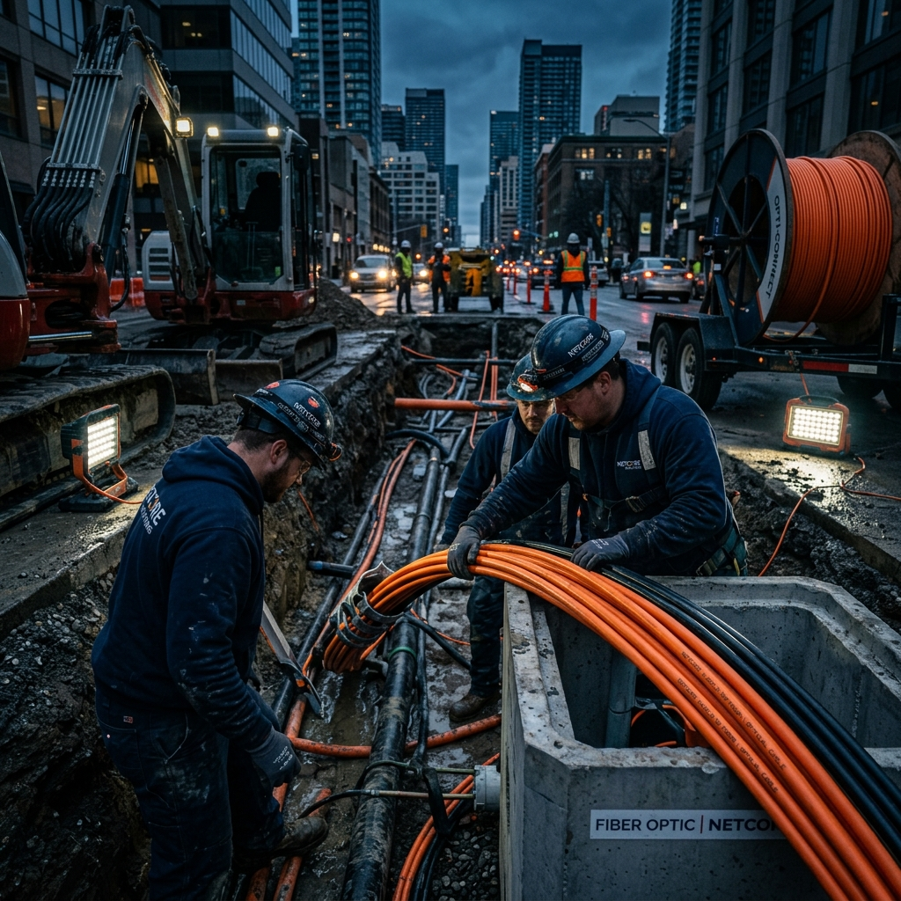
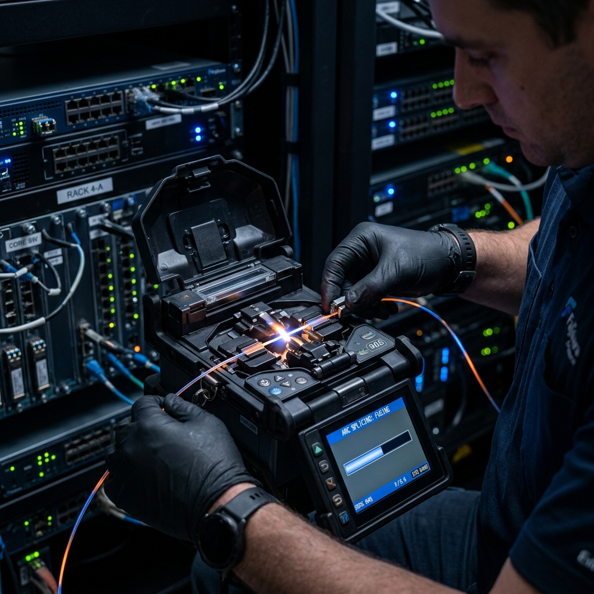

Construímos a Rede do Futuro:
Soluções End-to-End de Fibra Ótica.
Equipas especializadas no terreno para implementação de infraestruturas de telecomunicações, redes subterrâneas e aéreas, com máxima precisão e rigor técnico.
O Que Fazemos
Serviços Core de Infraestruturas
Implementação de redes e telecomunicações suportada por equipas especializadas, combinando rigor técnico e capacidade no terreno.
Redes Subterrâneas e Aéreas
Oferecemos serviços completos de escavação, instalação de condutas e passagem de cabos de fibra ótica e cobre, garantindo infraestruturas resilientes e duradouras.
- Escavação e preparação de terreno
- Instalação de condutas seguras
- Passagem otimizada de cabos

Fusão de Cabos Óticos
Conectividade de alta qualidade garantida através de fusão de precisão, minimizando a atenuação e maximizando o desempenho da rede em qualquer cenário.
- Fusão de fibra com equipamento de precisão
- Certificação e testes de atenuação
- Instalação de juntas e armários

POPs e Baixa Tensão
Edificação de Pontos de Presença (POPs) seguros, com preparações elétricas de suporte que garantem a estabilidade física e energética necessária para operar de forma ininterrupta.
- Construção e adaptação de espaços técnicos
- Instalações elétricas em baixa tensão
- Acondicionamento seguro de equipamentos
Porquê Escolher-nos
Vantagem Competitiva no Terreno
A fundação para entregas de sucesso, cumprimento de prazos e conformidade legal.
Capacidade Operacional Dedicada
Dispomos de frota e recursos humanos altamente treinados e focados em garantir prazos rigorosos e qualidade de execução, operando de forma perfeitamente integrada e suportados pela forte parceria estratégica com a Univermotion.
chave-na-mão
Responsabilidade e Alvará
A nossa atuação no terreno está integralmente coberta por alvará de construção, garantindo total conformidade legal e tranquilidade para os nossos parceiros em todos os projetos de infraestrutura.
Expansão Modular
Desenhada para escalar. A nossa estrutura operacional permite uma capacidade de adaptação imediata a megaprojetos, incluindo o desenvolvimento de infraestruturas críticas para parques solares e grandes complexos.
Potencie o seu Investimento
num Mercado em Pico de Procura.
A procura por infraestruturas de rede nunca foi tão alta. Junte-se a uma equipa com a capacidade técnica e operacional para entregar resultados imediatos no terreno.